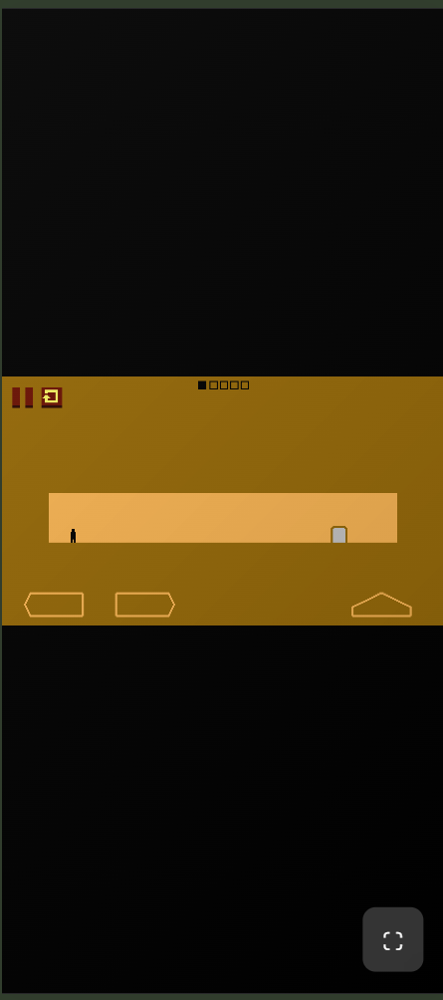
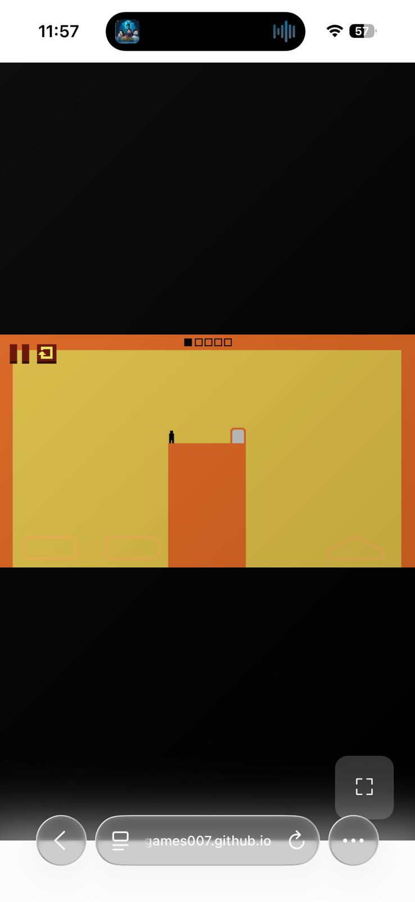
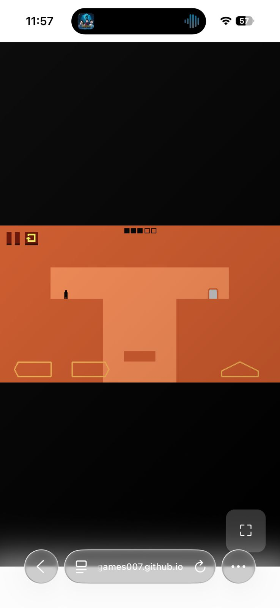
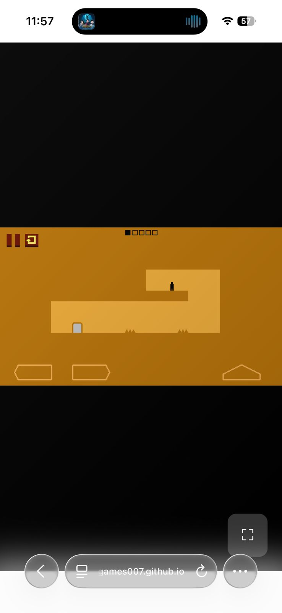
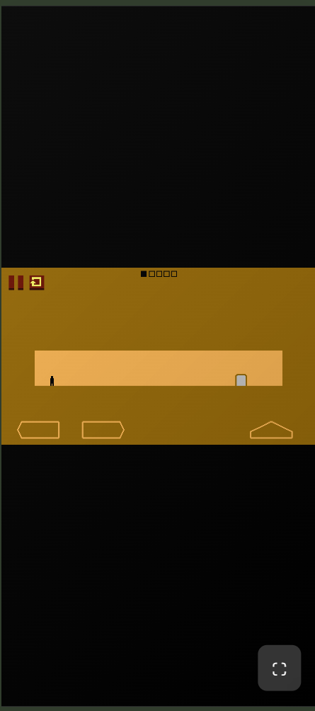
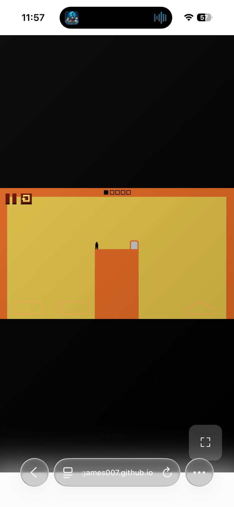
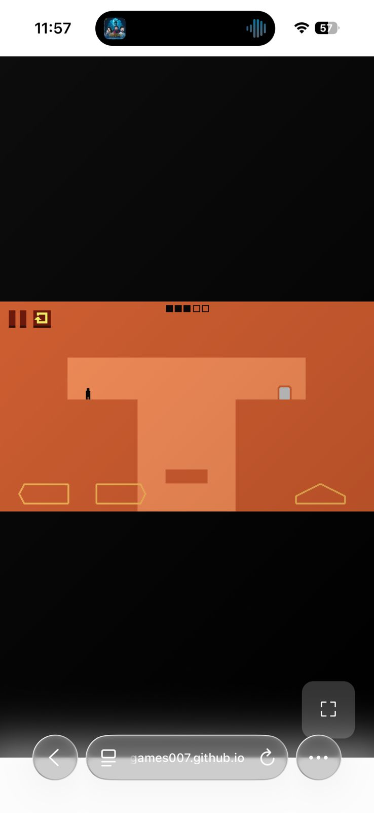
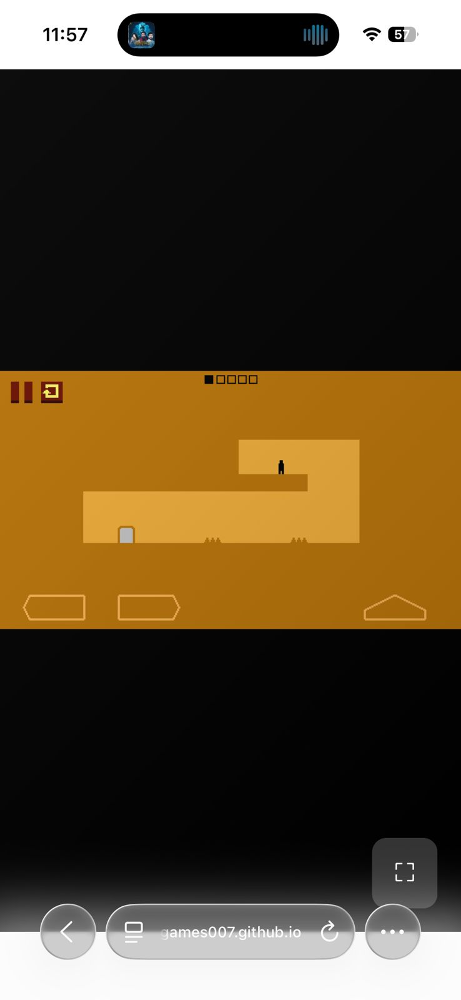

Level Devil
A tricky platform game full of traps
Screenshots
 








Level Devil
Level Devil is a hilariously cruel 2D platformer known for its deceptive gameplay built around unpredictable dangers and trolling mechanics. Think classic arcade-style platforming meets the laugh-through-the-anger spirit of today's rage games. Only smarter, funnier, and harder to put down.Not your average side-scroller, Level Devil is a devilishly clever game pushing your reflexes, patience, and determination to the limit. You play as a tiny pixel hero on a simple mission: to reach the door on the other side of the stage and get out. Sounds easy, right? Think again.The best part? You can play the official browser version of Level Devil only on Zipy, a free, instant-play edition made together with its creator. The game exploded on YouTube, with creators screaming, laughing, and always coming back for more. That mix of pain and fun turned Level Devil into a global rage-game phenomenon. And the devil isn’t done yet: Unept has already teased even more levels on the way with “new stages to love and hate.”
How to Play
Controls
The controls are intuitive and easy to pick up:
- Desktop: Move with A (left), D (right), W (jump), or the arrow keys, and jump with the spacebar or up arrow. Press ESC to pause, and when you fail, tap any key to restart instantly.
- Mobile: Use the on-screen arrow buttons to move and the up arrow to jump. Tap the menu icon to pause, and tap the screen to restart right away.
Gameplay
In Level Devil, the player must guide the character to the exit door using simple movements - move, jump, survive. But don't get too confident, because every stage hides surprises designed to catch you off guard. Here's what to expect once you start running:
- Floors can vanish without warning, sending you straight into danger.
- Spikes might pop up from nowhere, even on paths that looked perfectly safe a second ago.
- Swinging saws appear right when you least expect them.
- Doors can disappear, move, or even trap you before you make your escape.
- Gravity can suddenly shift, controls can flip, and fake platforms might explode the moment you step on them.
So learn fast, stay sharp, and don't forget: nothing in Level Devil is ever as simple as it looks.
Progression
The game unfolds across three chapters of escalating difficulty: Level Devil, Level Devil-er, and Level Devil-est.
- Level Devil: The first chapter eases you in with classic traps like pits, spikes, springs, and crumbling platforms.
- Level Devil-er: adds new mechanics like bombs, levers, jetpacks, and inverted gravity, keeping you constantly on edge.
- Level Devil-est: Now the game goes full trickster mode with revolving obstacles, moving hills, timed explosions, and thorny hazards that seem alive. Just when you think you've mastered every pattern, the next chapter proves you haven't seen anything yet.
Stages & Doors
Level Devil is split into 16 doors, each hiding five short but brutal stages. Clear one to unlock the next, and brace yourself, because the deeper you go, the meaner the tricks get. Quit halfway through, and you'll have to start that door from scratch.With nearly 200 handcrafted stages, every part of the run is packed with new surprises that test your skills. Later levels flip the script with reversed controls, gravity that sticks you to the floor when you try to jump, and teleporting warps that send you off-screen.Make it to the final door and you'll face the ultimate challenge: the demon king's area, where you will witness an epic ending.
Every Fail Brings You Closer to Victory
In Level Devil, failure isn't the end, it's part of the journey. One of the most satisfying features is the instant respawn, which takes you back to the start of your current level in a split second.Every death teaches you something new, where spikes appear, how gravity shifts, or when a door might vanish, and that learning curve is the real reward. The game turns frustration into progress, pushing you to laugh, retry, and outsmart the devil one trap at a time.
Easter Eggs
Hidden within this tricky platformer are secret purple keys waiting to be discovered in the most unexpected places. Players might find them behind invisible platforms, inside crates, or by triggering hidden mechanics like bullet dispensers and false walls.Collect all ten to unlock a secret level that leads to the game's true ending, marked by the mysterious double-purple door. To access it, open the settings menu and wait a few seconds for the hidden option to appear.It's a sly reward for players sharp enough to outsmart every trap and uncover the game's final twist.
Multiplayer Mode
You can jump into Level Devil solo or turn up the chaos with 2-player mode. Single player is already wild, but with a friend it's double the laughs, double the fails, and double the trash talk.Race to the exit, trigger traps to trip each other up, or swap turns to see who survives longer. It's competition, comedy, and a little bit of mischief all rolled into one.
Level Devil Survival Guide
Our team has played through every stage to bring you smart tips that cut down frustration and give you an edge.
General Tips for New Players
- Take it slow: observe hazards before making your move.
- If controls suddenly feel off, test them first before committing.
- Remember: in gravity-flip stages, space makes you stick instead of jump.
- Be ready to die once to learn a gate's trick.
Advanced Tips for Stuck Players
- Experiment with routes: the obvious path isn't always the fastest.
- Keep practicing your timing until tough jumps feel natural.
- Stay calm under pressure and you'll handle even the most intense stages.
If you're still stuck after a few tries, a "Skip Level" button will pop up. You can use it to move past your current stage and keep your progress rolling. Our advice: save it for when you really need it.
Similar Games like Level Devil
If Level Devil keeps you hooked, you'll love other tricky platformers on Zipy. Try Fancy Pantsadventures for smooth acrobatics, or swing your way through Stickman Hook for a lighter, rage-free challenge. Fans of sneaky traps should check out Big Tower Tiny Square, while stretchy mayhem awaits in Silly Sausage.You can also play more games from Unept right here on Zipy, including Into the Pit and Unicycle Hero, both packed with the same cheeky, devilish energy.
Who Created Level Devil?
A solo developer Adam Corey, better known as Unept, originally built this game as a joke to troll his friends, but that prank turned into one of 2024's biggest indie hits.